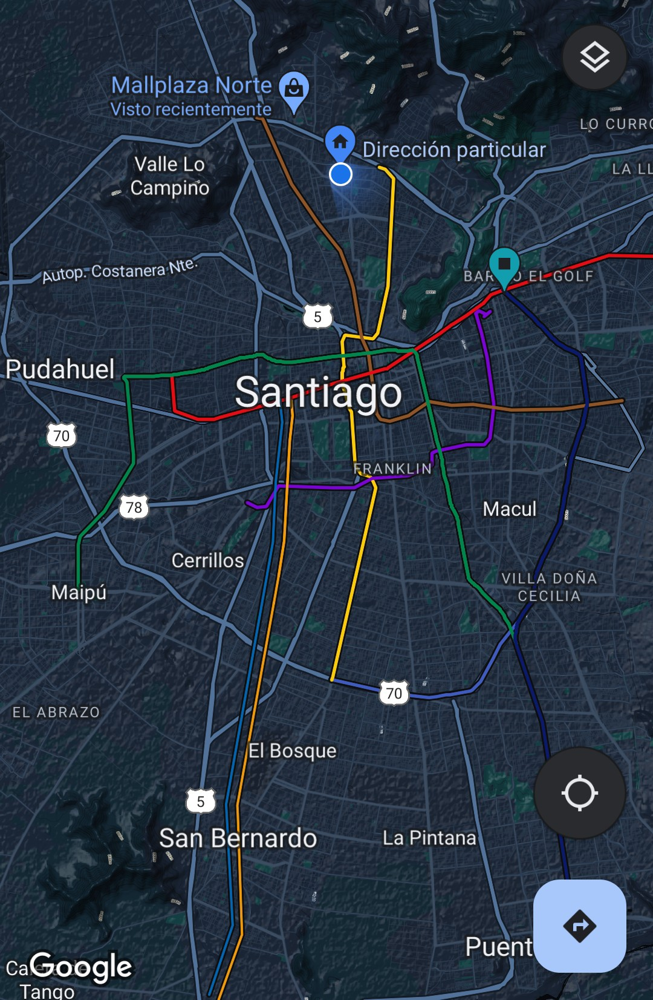

<ion-header>
  <ion-toolbar>
    <ion-title>pantallaPrincipal</ion-title>
  </ion-toolbar>
</ion-header>

<ion-content>
  <ion-tabs>
    

    <ion-tab-bar slot="bottom">
      <ion-tab-button [routerLink]="['/preguntas-frecuentes']" tab="about">
        <ion-icon name="information-circle"></ion-icon>
        <ion-label>Preguntas</ion-label>
      </ion-tab-button>

      <ion-tab-button [routerLink]="['/viaje']" tab="schedule">
        <ion-icon name="car-sport-outline"></ion-icon>
        <ion-label>Viajar</ion-label>
        <ion-badge>6</ion-badge>
      </ion-tab-button>

      <ion-tab-button (click)="pasarDatos()" tab="speakers">
        <ion-icon name="person-circle"></ion-icon>
        <ion-label>Perfil</ion-label>
      </ion-tab-button>
    </ion-tab-bar>
    
  </ion-tabs>
</ion-content>
